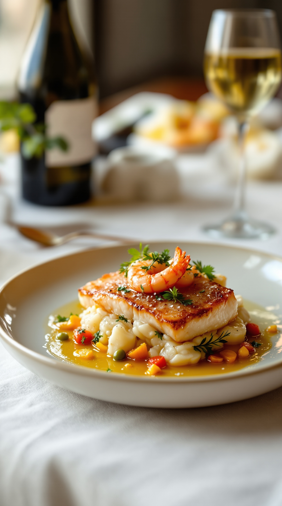
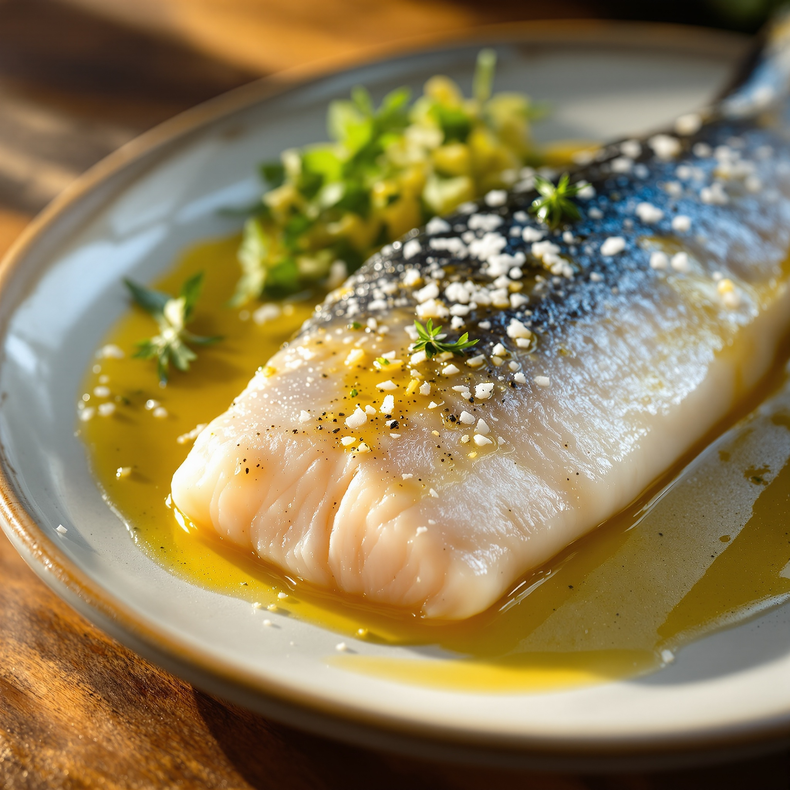
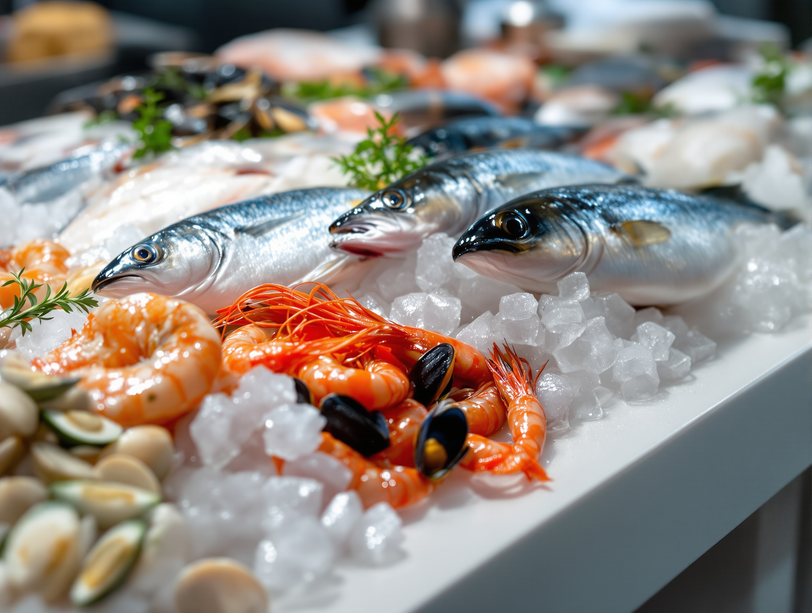
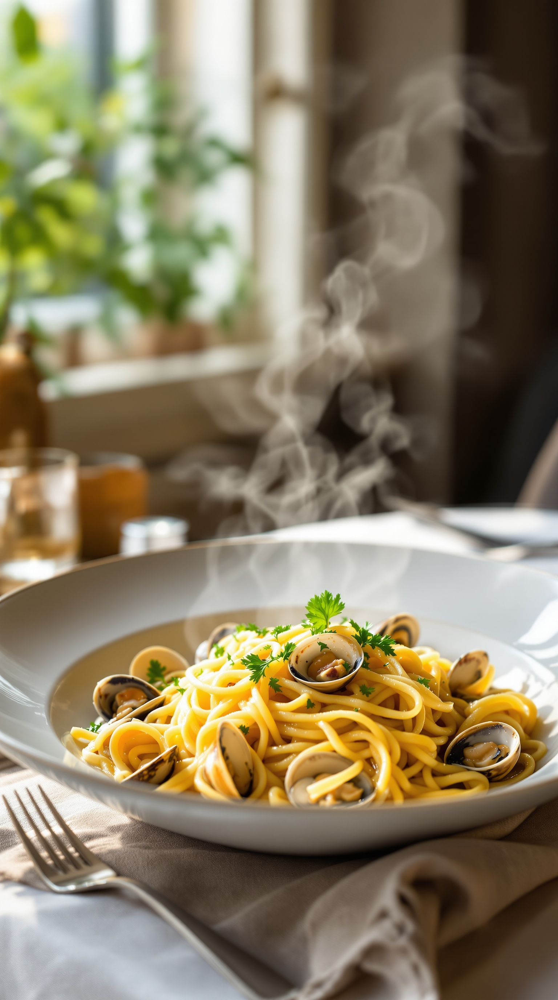
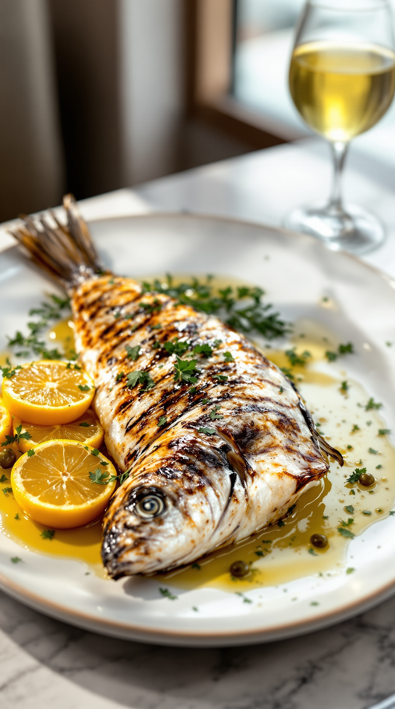
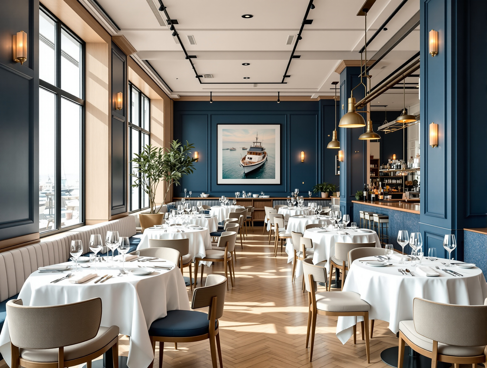
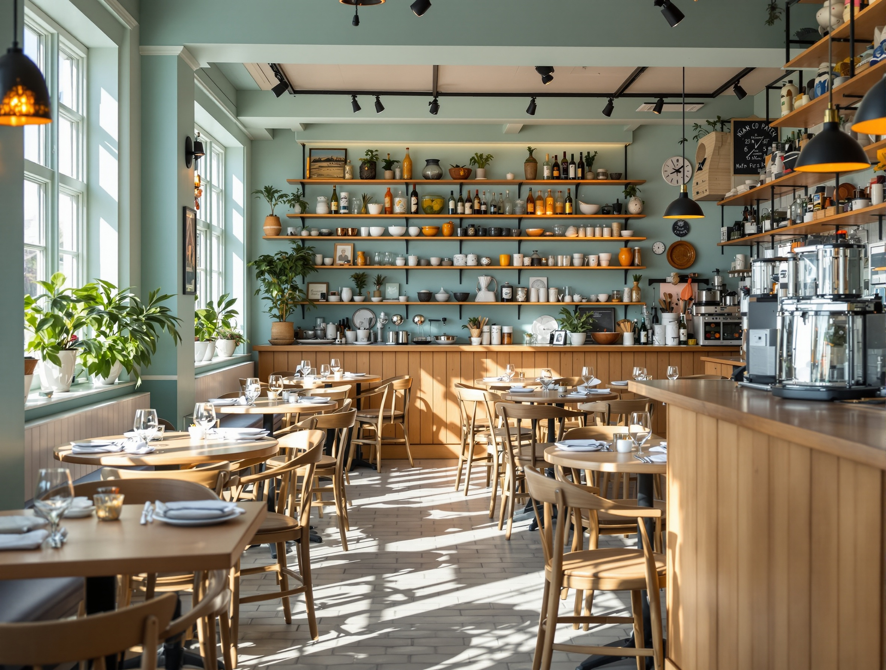
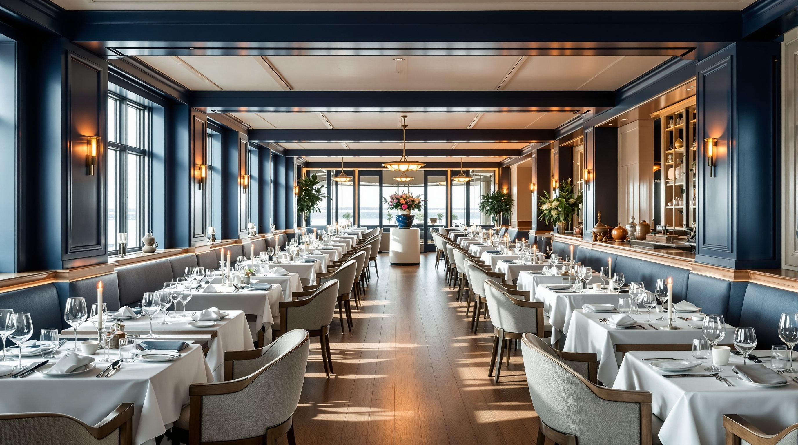
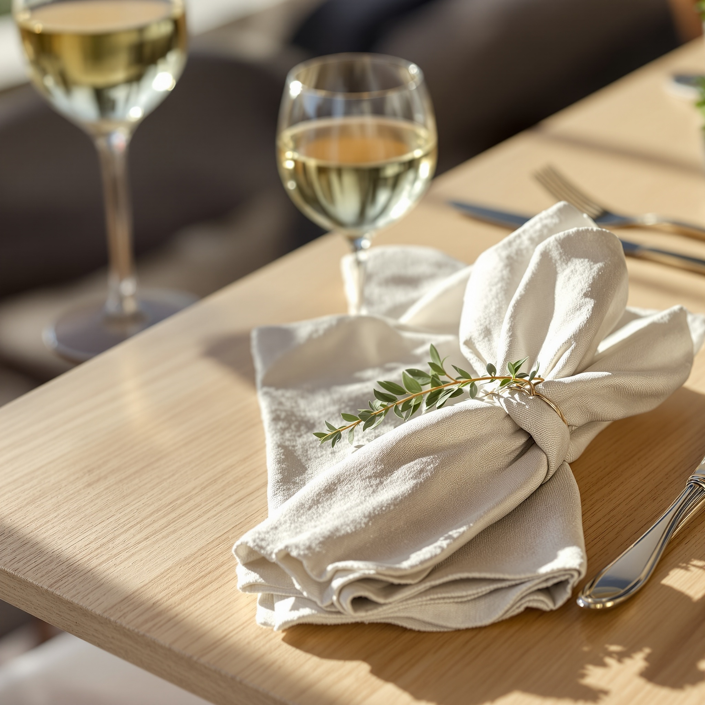

01 — Crudo
Crudo di mare
Ricciola e gambero rosso, agrumi e olio. Il piatto che apre la cena: pesce crudo tagliato al momento, condito con misura.
Selezione dal banco del giorno
Cucina di mare a Milano
Prenotazione al telefono · +39 02 683807
Il Pescato del Giorno
Il crudo cambia con il mercato. La carta segue il mare, non il calendario: se una specie non convince al banco, quel giorno non la serviamo.

I Piatti
Pochi piatti firma, costruiti sul pescato. Al posto di un listino che il vecchio sito non mostrava, qui ci sono le prove.

01 — Crudo
Ricciola e gambero rosso, agrumi e olio. Il piatto che apre la cena: pesce crudo tagliato al momento, condito con misura.
Selezione dal banco del giorno
02 — Primo
Vongole fresche, prezzemolo, un’emulsione lucida. Un classico di mare tenuto asciutto e preciso, come lo facciamo in cucina.
Pasta mantecata a crudo
03 — Secondo
Pesce intero, limone arrostito, erbe e olio. Cottura sulla pelle, servito in sala e sfilettato: la materia prima, quasi nuda.
Pesce intero del giornoLe Due Sedi
Stesso pescato, due caratteri. Il Ristorante di Via Taramelli per una cena curata; il Bistrot di Via Procaccini, più informale e marinaro. Scegliete la sala, noi teniamo il mare.

Via Torquato Taramelli, 70 · Milano, zona Isola
Cucina italiana moderna a base di pesce. Tavoli apparecchiati, argento, luce da finestra: la sede per una cena da prenotare.
Chiama per prenotare
Via Giulio Cesare Procaccini, 28 · Milano, zona Chinatown
Il fratello informale: banco, tavoli piccoli, atmosfera da marina. Stessa materia prima, tono più diretto, ideale a pranzo.
Chiama per prenotareLa Sala
Blu profondo, legno chiaro, argento. La sala è pensata per una cena lenta: prima che assaggiate, la tavola dice già che tipo di posto siamo.


Ogni coperto è preparato prima del servizio: tovagliato, posate lucide, un calice. I dettagli sono il motivo per cui una cena qui vale la prenotazione.
La Prenotazione
Non abbiamo una prenotazione online: preferiamo sentirvi. Chiamateci e vi troviamo il tavolo giusto, nella sede giusta, con il pescato del giorno già in mente.
Per gruppi, allergie o una cena particolare, ditecelo al telefono: organizziamo la sala su misura.
Orari indicativi a titolo dimostrativo: confermate giorni e disponibilità delle due sedi al momento della prenotazione.
Come Arrivare
Entrambe le sedi sono in città, servite dai mezzi. Aprite l’indirizzo in mappa e partite.
A pochi passi dalla stazione Centrale e dall’Isola. Servito da MM e passante.
Apri in Google Maps →Tra Chinatown e il Monumentale, in zona Procaccini. Comodo a piedi dalla città.
Apri in Google Maps →Domande
Il Ristorante di Via Taramelli è cucina italiana moderna di pesce, per una cena curata. Il Bistrot di Via Procaccini è più informale e marinaro, con lo stesso pescato ma un tono da banco. Stesso nome, due sale diverse.
Sì. Per tavoli numerosi o cene di lavoro chiamateci: organizziamo la sala e il menu in base al pescato del giorno.
Segnalatecele quando prenotate. La cucina adatta i piatti e vi indica in sala cosa contiene ogni portata.
Le due sedi sono in zona Isola e Procaccini, ben servite dai mezzi. In auto conviene il parcheggio su strada nelle vie limitrofe o le aree a pagamento vicine.
Per ora la prenotazione è al telefono: +39 02 683807, una sola linea per Ristorante e Bistrot. Ci piace sapere chi arriva.